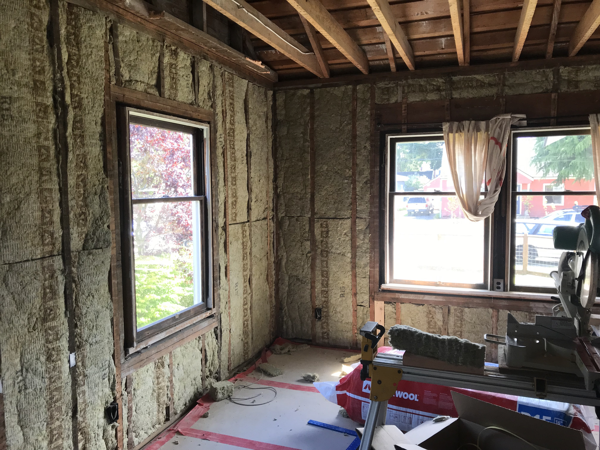
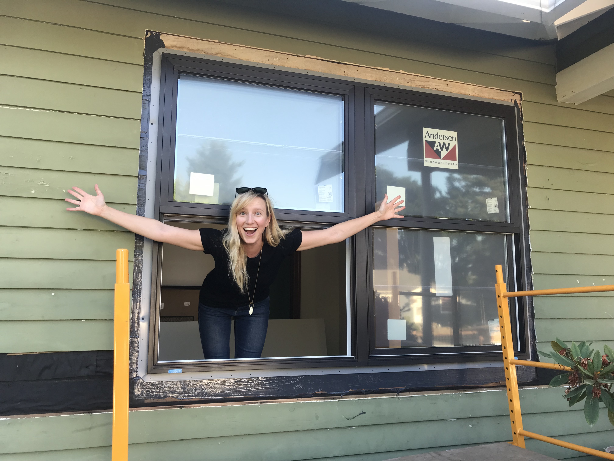
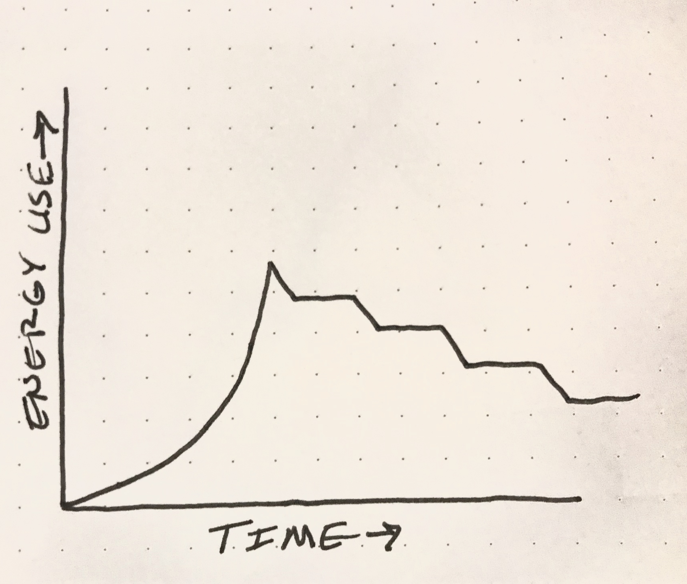
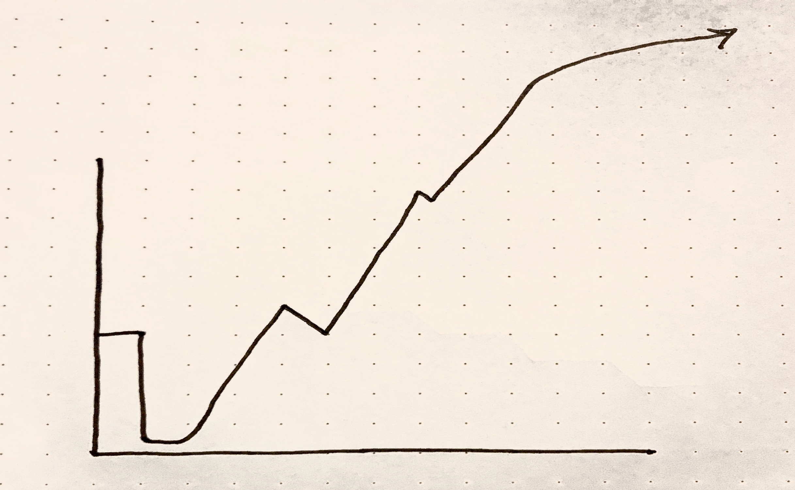

Software performance & the climate crisis
Dane Springmeyer
dane@mapbox.com
Dane has recently been diving deep on performance optimizations in his work at Mapbox and spending evenings learning about energy efficiency as he renovates an old home. This talk will explore his lingering questions about how to live ethically as our climate warms and what this means for how we optimize software.
recently, thinking about climate change
and ethical obligations to take action
what agency do I have to decarbonize?
a home renovation presented me with agency
community energy challenge
measure current energy use and quantify emissions
guidance to decarbonize
and reduce overall home energy needs
final audit to measure improvments in efficiency
switch to purchasing 100% green and renewable power


but, what about where I work?
at mapbox we use a lot of cloud compute
data centers and cloud: > 2% of global emissions
carbon emissions from electricity generation
demand > availability of renewables
will grow exponentially
cloud usage = more emissions than flying around in airplanes
this is a massive problem
but, don't we have agency over how our services are written and scaled?
me at work:
• freaking out about climate change
• optimizing code with passion

increased efficiency leads to increased demand

so we have to go way further
using less is not viable, must also decarbonize what we use
so how to decarbonize cloud compute?
no easy answers, but in greater awareness is hope
renewable power + carbon offsets power 100% of us-west-2 for AWS
While us-east-1 is powered mostly by power from coal and fracking
Thank you!
dane@mapbox.com / Dane Springmeyer